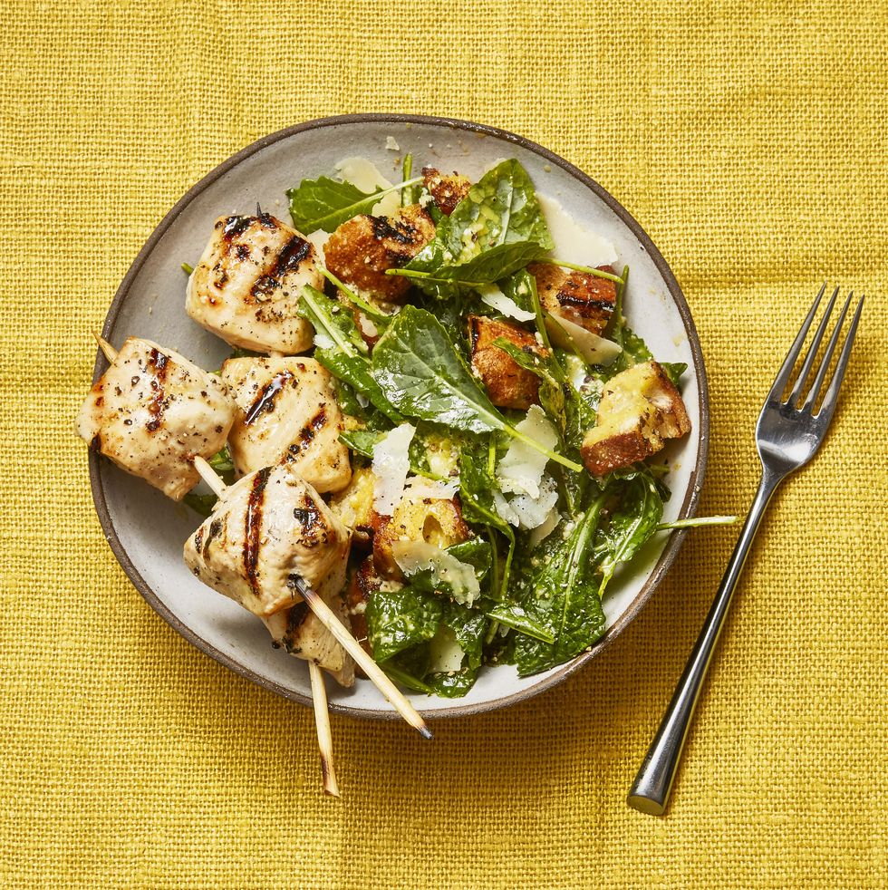

Grilled Chicken Skewers and Kale Caesar

Caesar salad, but make it summer
Serve simple grilled chicken skewers with a creamy, garlicky kale caesar salad for a light summer meal in under 30 minutes.
Ingredients
- 2 lemons
- Boneless chicken breasts
- Kosher salt and pepper
- 8 thick slices baguette
- 1 clove garlic
- Large egg yolk
- Dijon mustard
- Olive oil
- Grated parmesan
- Baby kale
Steps
- Cut 1 lemon in half
- From remaining lemon, finely grate 1 teaspoon zest and squeeze 4 tablespoons juice.
- Cut chicken into 1 1/2-inch chunks; thread onto skewers and season with 1/4 teaspoon each salt and pepper.
- Grill until cooked through, 3 to 4 minutes per side. Grill 1 lemon half, cut side down, until charred; squeeze over chicken.
- Grill bread until toasted, rub both sides with garlic halves, then cut into cubes.
- In a large bowl, whisk together lemon zest and juice, egg yolk, mustard, grated garlic and 1/2 teaspoon salt.
- Slowly whisk in oil. Fold in Parmesan, then kale and croutons, and season with pepper. Serve with chicken.
Home Page